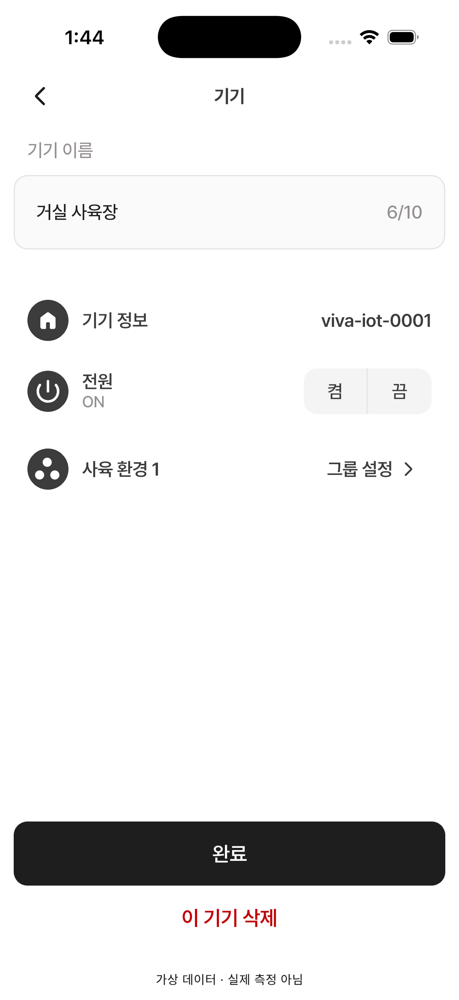

13 · 사육장 상세
12번 승인 완료 · 다음 화면 검수 대기
이름 입력, 기기 정보, 전원 표시, 그룹 설정, 하단 완료/삭제 버튼을 확인합니다. 기기명·ID·그룹명·글자 수는 QA 데이터 차이입니다.
전원은 기존 확정대로 항상 ON입니다. 현재 버튼은 스크롤 밖 고정 영역이며, 긴 콘텐츠/키보드가 있을 때의 겹침 동작은 이 정지 화면으로 검증하지 않았습니다.
Figma · 393×852 13 · 시뮬레이터 · 402×874
13 · 시뮬레이터 · 402×874
검수 범위